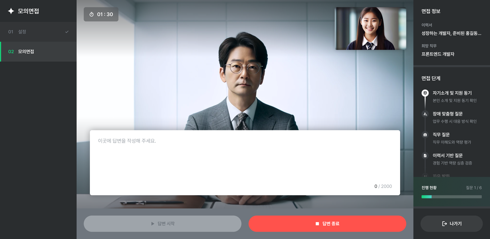
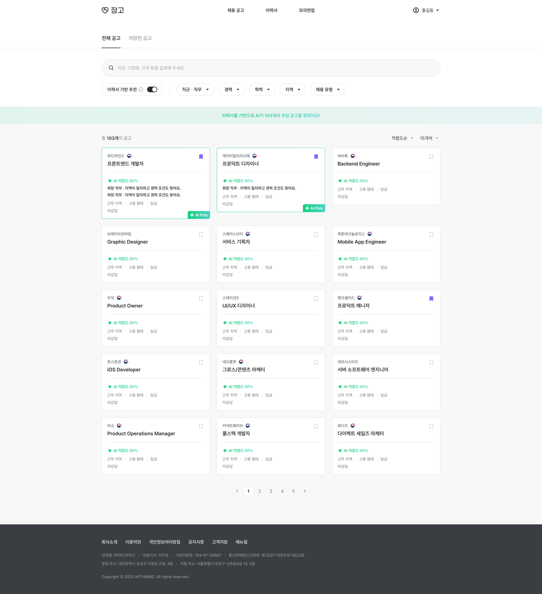
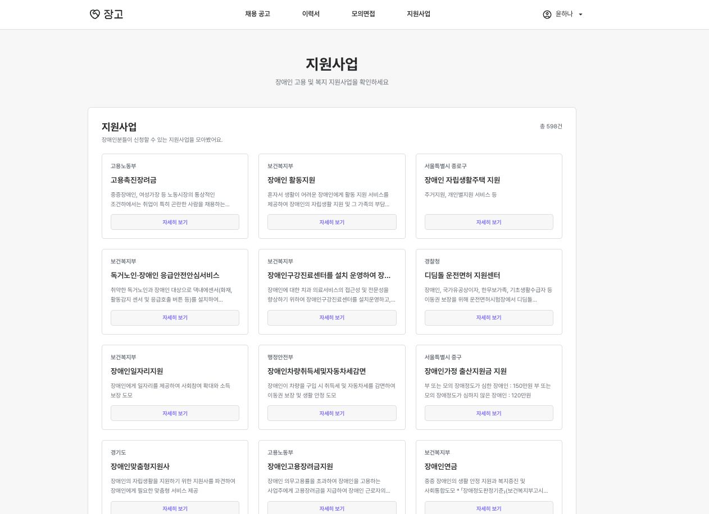
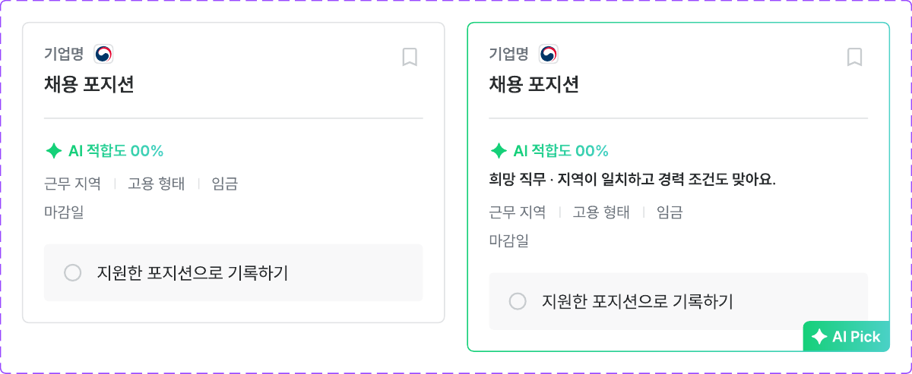

청각장애인과 안면장애인을 위한 텍스트 기반 면접 모드를 제공합니다. 영상 촬영 없이 질문을 텍스트로 읽고 답변을 입력하는 방식으로, 음성이나 표정 분석이 어려운 경우에도 면접 연습을 할 수 있습니다.
오른쪽 면접 단계 패널에는 자기소개, 장애 맞춤형 질문, 직무 질문, 이력서 기반 질문 등 각 단계를 아이콘과 텍스트로 명확히 표시해 현재 진행 상황을 파악할 수 있습니다.

장애인 구직자와 기업, 복지관을 연결하는 고용 플랫폼. 세 사용자 그룹이 각각 쓰는 사이트를 만들면서, 접근성을 ‘나중에 점검할 항목’이 아니라 화면 설계의 기준으로 앞에 뒀습니다.

장고가 풀려는 문제는 "일자리가 없다"가 아니라 "지원 과정에 닿지 못한다"입니다. 공고를 찾고 이력서를 쓰고 면접을 준비하는 절차 자체가 장벽이 되면, 그 뒤의 채용은 시작되지 않습니다. 그래서 이 프로젝트에서 접근성은 마감 전 체크리스트가 아니라 화면을 설계하는 출발점이었습니다.
장고는 장애인 구직자, 기업, 복지사를 연결하는 통합 고용 플랫폼입니다. AI 모의면접 기능을 탑재하고 WCAG 2.1 AA 수준의 웹 접근성 준수를 목표로 삼아, 장애인 고용의 장벽을 낮추고 더 나은 취업 기회를 제공하는 것을 목적으로 합니다.
구직자, 기업, 복지관 3개의 독립적인 웹사이트로 구성되며, 각 사용자 그룹의 필요에 맞춘 화면을 각각 제공합니다.

같은 채용 데이터를 세 그룹이 서로 다른 목적으로 봅니다. 한 화면을 권한으로 나누는 대신 사이트를 셋으로 분리한 이유가 여기에 있습니다. 구직자 화면에 기업용 기능이 회색으로 비활성화된 상태로 남아 있으면, 그것 자체가 탐색을 방해합니다.

화면 자료에서 확인할 수 있는 판단들만 적었습니다. 전체 준수 여부를 측정한 기록은 따로 가지고 있지 않아, 여기서는 설계 단계에서 지킨 규칙만 정리합니다.
청각장애인과 안면장애인을 위한 텍스트 기반 면접 모드를 제공합니다. 영상 촬영 없이 질문을 텍스트로 읽고 답변을 입력하는 방식으로, 음성이나 표정 분석이 어려운 경우에도 면접 연습을 할 수 있습니다.
오른쪽 면접 단계 패널에는 자기소개, 장애 맞춤형 질문, 직무 질문, 이력서 기반 질문 등 각 단계를 아이콘과 텍스트로 명확히 표시해 현재 진행 상황을 파악할 수 있습니다.

고용촉진장려금, 활동지원, 자립생활주택 지원 등 장애인 관련 지원사업 정보를 한곳에서 확인할 수 있습니다. 각 지원사업의 대상, 내용, 신청 방법을 카드 형식으로 정리해 필요한 정보를 빠르게 찾을 수 있도록 했습니다.

알림 설정 토글을 켜고 끌 때 스위치의 색만 바뀌면, 그 변화를 못 보는 사용자에게는 아무 일도 일어나지 않은 것과 같습니다. 그래서 "알림 설정이 완료되었습니다" / "알림 설정이 해제되었습니다"처럼 결과를 문장으로 띄웁니다. 위 마이페이지 화면에서 두 안내가 함께 보이는 부분입니다.
토글 옆에는 그 설정이 실제로 무엇을 하는지도 문장으로 적었습니다. "취업 희망 기반 맞춤 공고를 매월 1회 카카오 알림톡으로 보내드려요. 이력서 작성이 완료된 경우에만 발송돼요."처럼 주기와 조건까지 미리 밝혀 켜고 나서 예상과 다른 일이 생기지 않게 했습니다.
추천 공고에는 초록 테두리와 ‘AI Pick’ 배지가 붙습니다. 하지만 색과 배지만으로는 왜 추천됐는지 알 수 없고, 색 구분이 어려운 사용자에게는 일반 카드와 같습니다.
그래서 추천 카드에는 "희망 직무·지역이 일치하고 경력 조건도 맞아요"처럼 이유를 한 문장으로 함께 넣었습니다. 강조 표시가 보이지 않아도 텍스트만 읽어서 같은 정보를 얻을 수 있습니다.

목록 위에는 전체 건수와 완료 건수를 먼저 보여줍니다. 여러 번 응시하는 것이 전제인 기능이라, 개별 행보다 "지금까지 몇 개를 했는가"가 먼저 필요하다고 봤습니다.
세 사이트 모두 운영 중이며, 아래에서 직접 확인할 수 있습니다.
세 사이트가 같은 데이터 모델을 공유하면서 화면만 달라지는 구조라, 컴포넌트를 나눠 재사용하고 데이터 형태를 타입으로 고정하는 편이 유리했습니다. 인증·알림처럼 세 사이트가 공통으로 쓰는 기능은 Firebase에 맡겨 각 사이트에서 중복 구현하지 않도록 했습니다.
장고를 만들면서 얻은 기준은 "보이지 않아도 같은 정보를 얻을 수 있는가"입니다. 색으로 강조한 것에는 문장을 붙이고, 상태가 바뀌면 결과를 말로 알리고, 입력란의 라벨은 입력 중에도 남겨 두는 식입니다.
이 규칙들은 장애인 사용자를 위해 추가한 예외 처리가 아니라, 적용해 보니 모든 사용자에게 화면이 더 분명해지는 종류의 결정이었습니다. 그 뒤 작업한 서비스에서도 같은 기준을 계속 쓰고 있습니다.